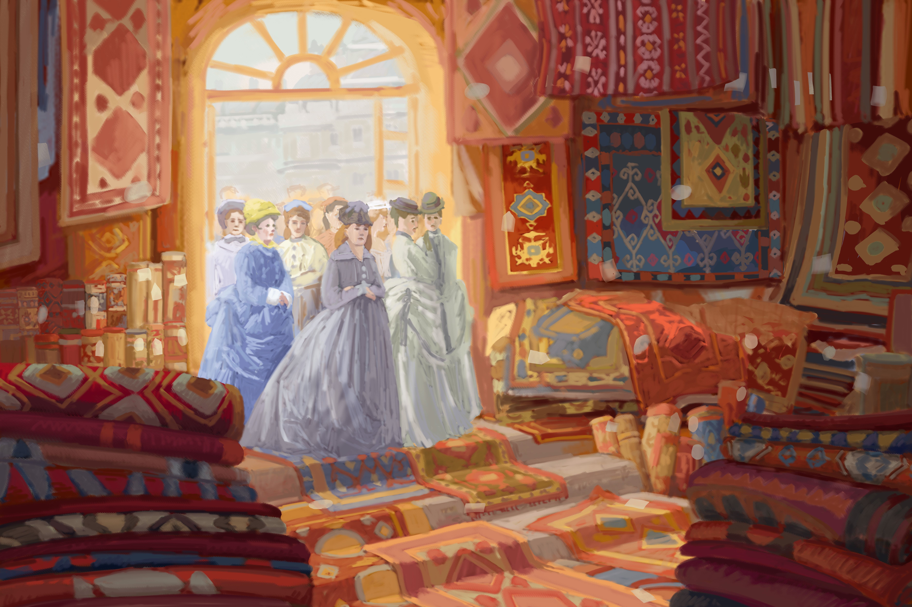
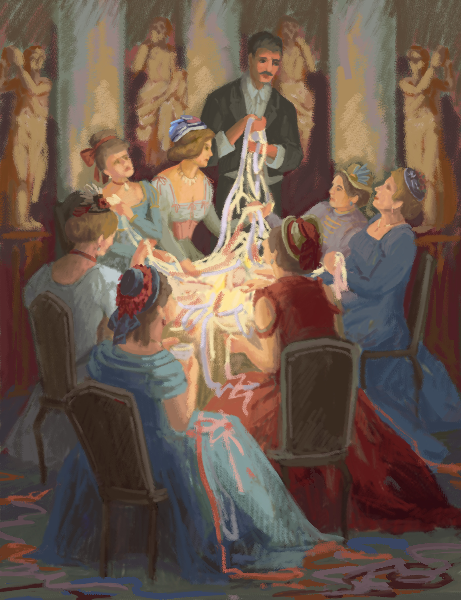

Ladies' Happiness
Department-store elegance: hats, gowns, and the theatre of shopping.
| Title | «Дамское счастье» — роман Эмиля Золя (1883). |
|---|---|
| Year | 1883 |
| Field | Costume / stage |
| Description | Появление первого в мире универмага-гиганта сводит женщин с ума. Витрины, ткани, кружева и запахи превращают их в одержимых, готовых тратить всё до последнего. Однако за блеском этого рая скрывается жестокий механизм, где одни стремительно богатеют, а другие разоряются. |

 1_1.jpg 1_1.jpg |  1_2.jpg 1_2.jpg |
 2_1.jpg 2_1.jpg |  2_2.jpg |
 3_1.jpg |  3_2.jpg 3_2.jpg |